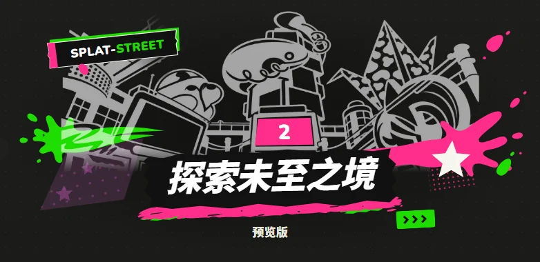
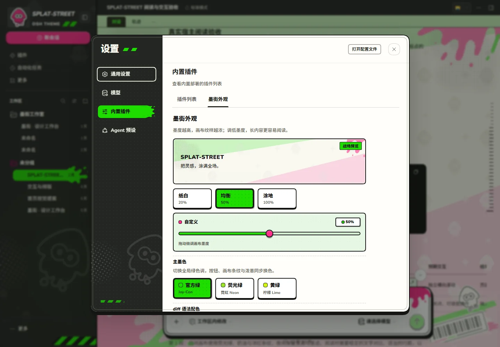
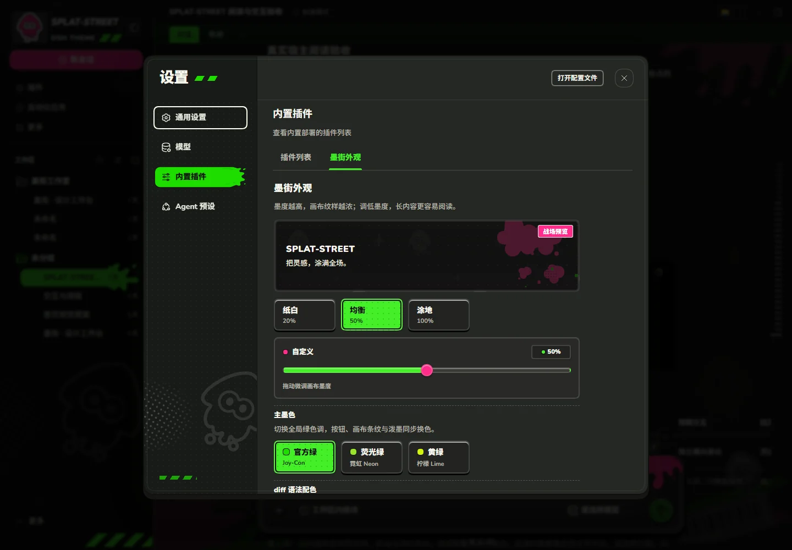
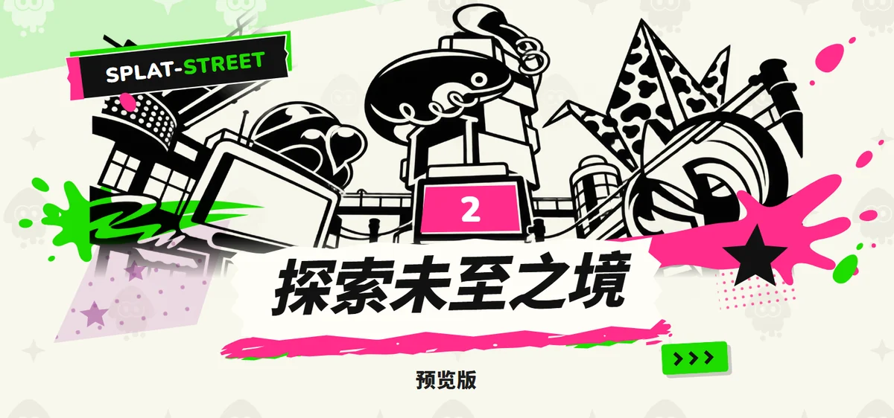

切换三套主墨色与画布墨度
外观面板提供官方绿 #1EDC00、荧光绿与黄绿三档主墨色，并支持 0%–100% 滑杆微调。
主题只覆写公开的 ThemeRuntime Token 与 4 个品牌 Slot。侧栏会话、Diff 交付区、工具卡片与输入区保持原生交互，停用即完整清理。
#1EDC00 底上白字对比度不足，统一用 readable() 选择深墨文字。日间采用官方绿、奶油与洋红三色条纹，夜间切换为炭黑广场。拖动滑杆可在纸白 20%、均衡 50% 与涂地 100% 间连续微调画布纸雾。


外观面板提供官方绿 #1EDC00、荧光绿与黄绿三档主墨色，并支持 0%–100% 滑杆微调。
插画装饰、纸面网点、内置 Nunito 字体与原生 Diff 语法可单独开关，偏好存本地 localStorage。
基于 TypeScript、esbuild、Biome 与 Lightning CSS 构建，字体与 SVG/PNG 素材内嵌进产物。
每次构建均运行站点校验、TypeScript 类型检查、契约测试与 DSH 主题兼容性核对。
启动页保留顶部鱿鱼印章，并将原版加载圈重绘为斯普拉遁 24 格特殊武器能量槽，进度直接读取宿主变量。
在设置、内置插件、墨街外观中切换纸白 20%、均衡 50%、涂地 100% 与三套主墨色，实时预览战场条纹。
夜间模式统一使用中性炭黑表面与浅墨发丝线，避免纯白过曝，只将荧光绿保留在主按钮与焦点状态。



进入 DSH profile 目录通过 npm 安装最新版；若使用离线归档包，可前往 Releases 下载 .tgz 或按 README 本地打包后完整重启服务。
cd <DSH_Profile_目录>
pnpm add dsh-theme-splat-ui不是。SPLAT-STREET 是非官方粉丝主题，与 Nintendo 及 DeepSeek 官方没有隶属或背书关系，来源见第三方声明。
不会。主题只覆写公开 Token 与 4 个品牌 Slot，侧栏、输入区与快捷键保持原生行为。
已完成真实 Web 宿主的日夜与 390px 窄屏全量验收，以及 Windows 桌面端原生标题栏与侧栏布局实机验证；独立 WebView 窗口仍随后续版本补充回归。
在插件管理里禁用主题或卸载包后重启，安装时快照的根属性会清理恢复，不残留外观设置。
